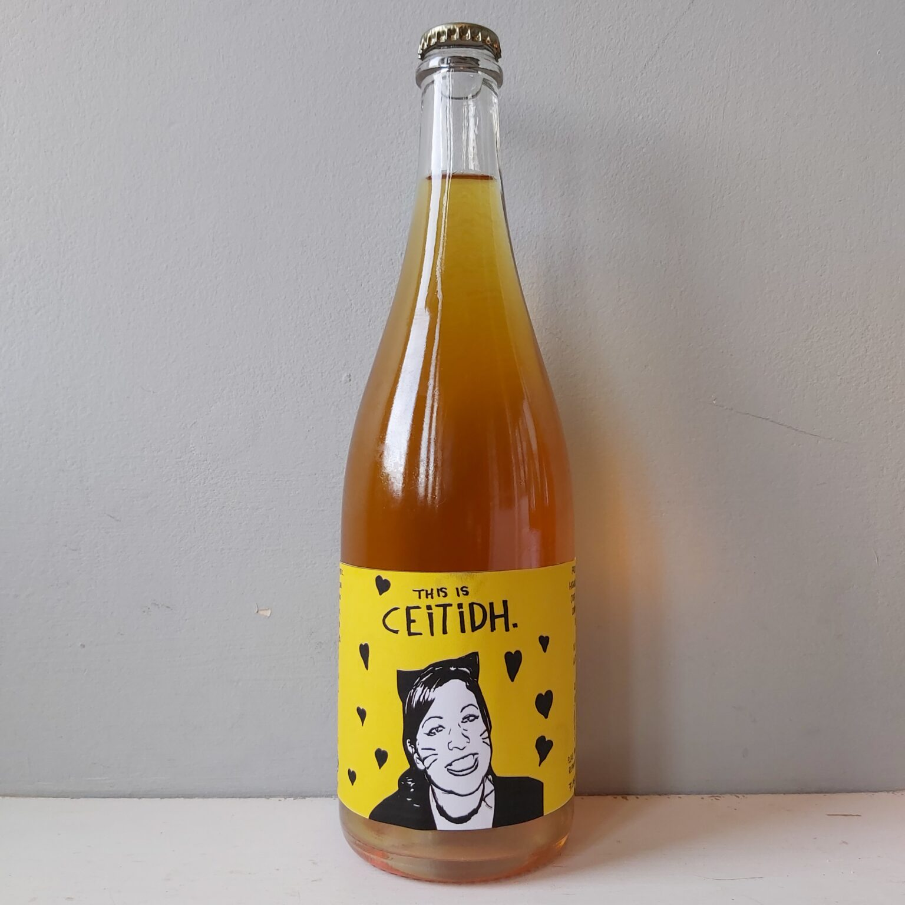

Taking Stock 2020 – Part 2

It’s entirely possible that I’m being overly optimistic here, but I feel quite confident that 2021 will be good year, assuming we don’t all just sink into the sea after Brexit. Cider wise I’ve some really cool stuff in the pipeline. So, as I mentioned in the last post I’m planning to do a repeat bottling of North and South, made exactly the same way as the 2019 (but with a few less bubbles hopefully). I’d love to see that cider sneak its way into some more mainstream outlets, the craft cider Trojan horse (I think I may secretly refer to this plan as Operation Trojan Horse). So aside from that what else have I got planned?
Well, since we had a good crop up here in the Highlands this year (approximately 5 times better than 2019) I’ll be able to relaunch Strange Bru (I know it’s a silly name but it was the first cider we made in the Highlands and it seems a shame to change it after all this time). Last year, due to the poor local apple crop and the size of the blend I sent off for the North and South bottling, I actually had very little dry cider left so it will be awesome to get back to doing that. I’m unsure yet whether it will be released as 33cl or 75cl, it will really depend on the size of the final blend (that said a 75cl Scrumpy could be fun).

I’ve recently worked out how to photograph my drawings which means for the first time that I can use my hand drawn label artwork (previously I’ve had to attempt to re-do my original sketches using a mouse on my old laptop which hasn’t been great so I’m really looking forward to the 2021 labels coming out).
I’ve put aside a cask each of Katy and James Grieve (with about 10% Bramley) which I’m pretty excited about, the James Grieve is razor sharp and bright as a button with a big banana nose (I’m talking massive foam banana sweeties here!), that will be getting bottled as a new single cask release called “High and Dry”. Also as a single cask bottling will be “This is Ceitidh” made appropriately enough from local Katy apples. I’ve not made a Katy since my days at Thatchers so it’s been quite interesting comparing the profile of this one to what we were making then. It’s light, sherbetty and very floral with a great minerality and only the tiniest dash of barrel influence. I have a feeling our Ceitidh will compare very favourably and I’m excited to try them side by side.

I’ve a couple of casks made for local estates (castles!) From their own orchard crop which have turned out beautifully and also satisfyingly different. I love working with an orchard blend, especially very old orchards such as these, you never know what you’re going to get but you know that it will be what the person who planted it all those years ago wanted it to be. I’ll move on before I start talking about time travel again but I’ll hopefully manage to hold on to a case or two of each to put out for general release.
I mentioned the 2020 vintage Islay Cask in the last post, just now it’s got a few months to go before it’ll be ready but the fruit was some of the best I’ve worked with. An early bittersweet called Major grown on the Black Isle and picked at their absolute prime, macerated for 3 days before pressing straight into a cask from a secret distillery on Islay…I’m aiming for body and texture and a big juicy smoky aroma. Time will tell of course if it comes out like that…

Another one returning from 2020 is Craobh Lan, at the moment it is still macerating in two barrels (doubling last years volume). It’s important that I sniff and taste these at least once every day, they’ve started to ferment now which is the first hurdle, next I just need to judge when to take the juice off the skins. Last year this was in early January but with it being a fair bit warmer this winter it may come sooner. After that stage they will be transferred into new barrels with apple wood cut from the orchard, this stage will last roughly a month before finishing off in yet to be chosen ex whisky casks. It’s a fairly complicated cider to make that relies entirely on the judgement of my nose. Last year it was pure Dabinett, this year it is a blend of Dabinett and Hereford Redstreak so it will be interesting to see what that extra bit of acidity does in such an extravagantly fruit forward cider.
Speaking of whisky casks, I’ve got some new ones in this year from the infamous Thompson Brothers of Dornoch, an independent whisky bottler (and distiller) of some note. As ever I can’t name the distilleries but there’s one from a village called Brora, one from Tain and a couple from the Black Isle (one of which is an ex-sherry cask). These have all been filled with an identical batch of Yarlington Mill which had just started to ferment before splitting it into these Hogsheads. There’s so much to barrels that rarely gets spoken about in cider that it would warrant a blog post all of its own. Do specific distilleries / whisky regions pair better with certain styles of cider? Definitely a rabbit hole to explore another day…
I’ll be doing a lovely wee batch of cider made purely from garden apples grown locally and swapped for cider during this year’s socially distanced harvest called “This Land is Your Land”. For me there’s something inherently subversive, possibly even anarchic about swapping produce. It harkens right back to the Digger movement
Propriety and single interest divides the people of a land and the whole world into parties and is the cause of all wars and bloodshed and contention everywhere Gerrard Winstanley TheTrue Levellers Standard Advanced – April, 1649
A kind of community agriculture, no one garden has enough to really be useful but if we join together and pool resources we can achieve far greater things. 2020 seemed like a very political year (even in the cider world) so this one has taken influence from that and it’s my interpretation of what cider is all about for me. People in all their wonderful and interesting variations working together to make something great for everyone to enjoy. The profits from the first 100 bottles will go directly to Moo Food which is a community food charity located in the Highlands of Scotland, with the aim to build community resilience by bringing people together to grow food, knowledge and confidence.
There’s loads of other plans, half plans and even quarter plans but I think that’s probably enough to be getting on with just now. Oh, I may even have a wee non-pomme-centric special waiting in the wings too…
To say that I’m looking forward to 2021 in cider would be a significant understatement.
Cheers to Everyone,
Let’s make this a year in cider we can all be proud of.
Ryan